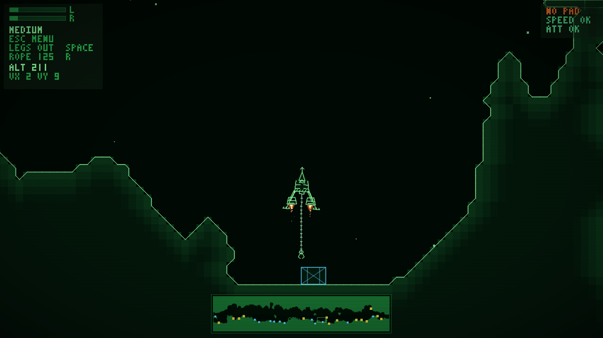

CRT-green cave lander — two engines, nothing else

The whole game runs in a web page (WebAssembly + WebGL / software). Keyboard and gamepads work; browsers start audio only after the first key press or click. Built with Emscripten and packaged with Nix.
Play dualthrust (WASM)Built from the same source as the browser version, version @version@.
ports/PortMaster/autoinstall/ and start PortMaster, or unpack it to
/roms/ports/.
nix run github:Grumbel/dualthrust)
or CMake, SDL2 and Box2D.
A small CRT-green cave lander with two engines and nothing else. Each trigger drives one engine: push both to climb, favour one side to rotate and slide sideways. Fly through a 2D cave, set the ship down on a landing pad, and haul crates with a winch and hook. The ship is a real rigid body (Box2D) with sprung landing legs; gravity never stops pulling. Written in C++17 with SDL2; all sound is synthesised on the fly.
Equal thrust lifts you straight up, uneven thrust spins you, and a tilted ship pushes sideways. Land slowly and upright on a pad (or anywhere the ground allows). Hard impacts destroy the ship; softer ones bounce. Retract the landing legs for tight tunnels. Deploy the rope, grab one of the twelve crates, and deliver it to a pad — heavy loads pull the ship down.
Eighteen ship presets (Narrow, Medium, Wide, Barge, Dart, Gnat, Hauler, Frigate, Atlas, Dragonfly, Colossus and more), switched in Options or with S. Heavier ships are steadier; the big four-thruster ones use the sticks for extra thrusters.
On-screen hints follow the last device you used (keyboard or gamepad).